Ob Grabtafel, Kissenstein, Standstein oder eine individuelle Grabanlage mit Grabsteineinfassung und Abdeckung: Mit Grablichtern, Grabvasen und weiterem Zubehör sind der Vielfalt kaum Grenzen gesetzt.
Gerne fertigen wir eine Grabanlage nach Ihren Wünschen und Vorstellungen an – und beraten Sie dabei ausführlich.
Persönliche Beratung
In unserer Ausstellung in Lehsen zeigen wir Ihnen Materialien, Formen und Schriften – und erstellen Ihnen gern ein unverbindliches Angebot.
Beispiele
30 Arbeiten – zum Vergrößern auf ein Bild tippen.

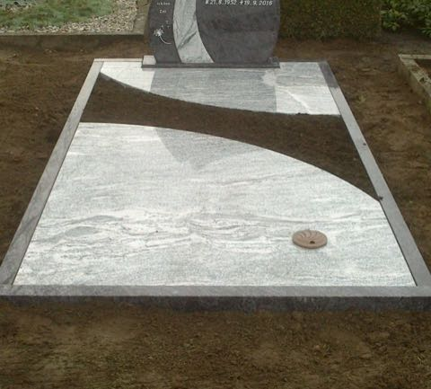

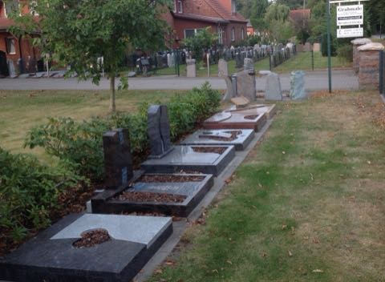

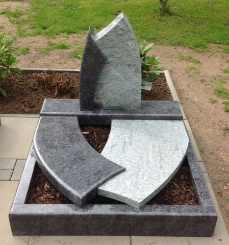

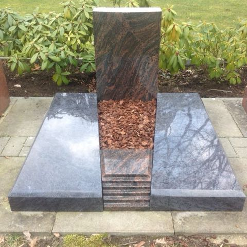

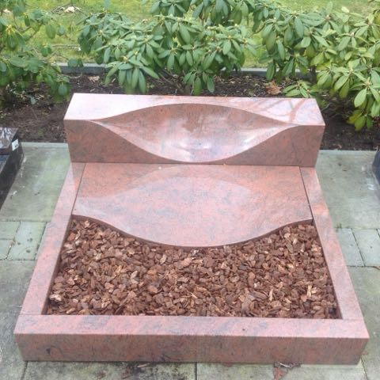

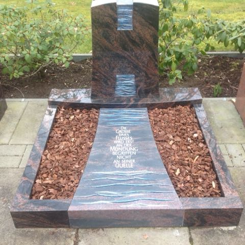

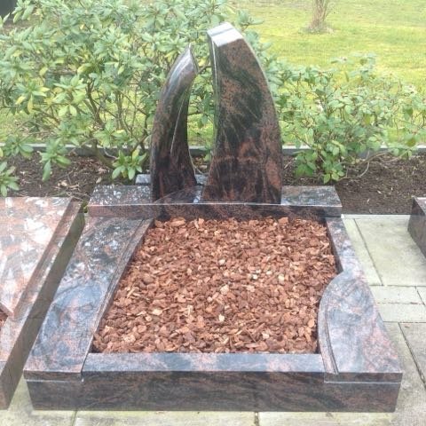

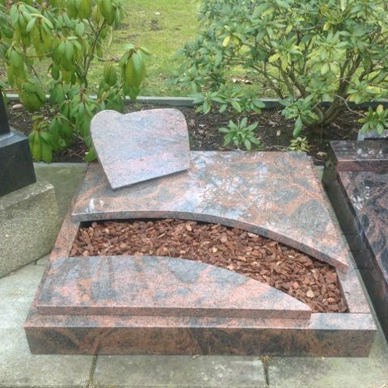

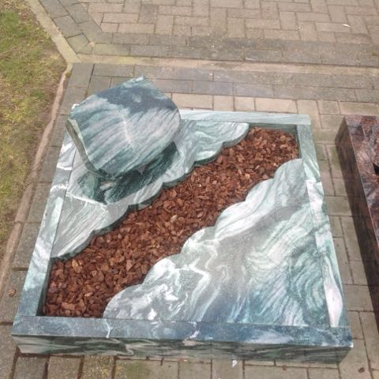

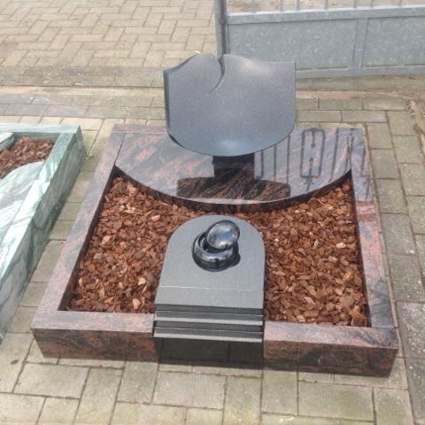

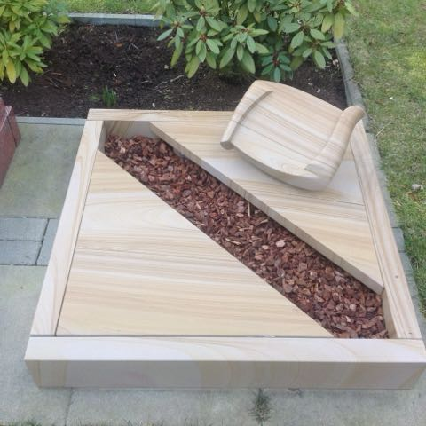

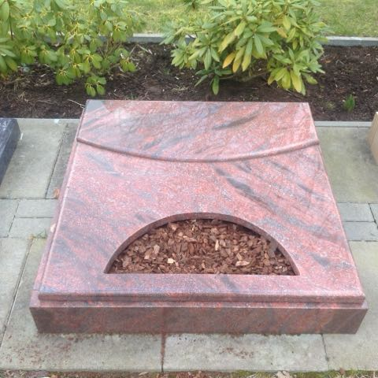

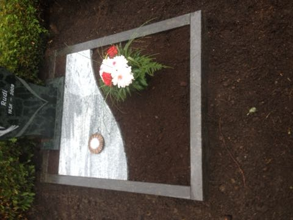

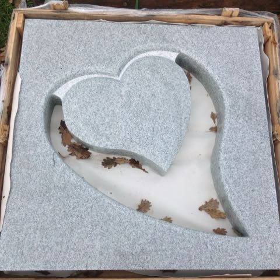

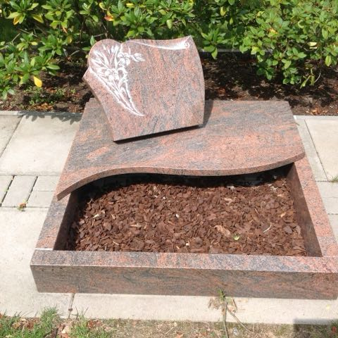

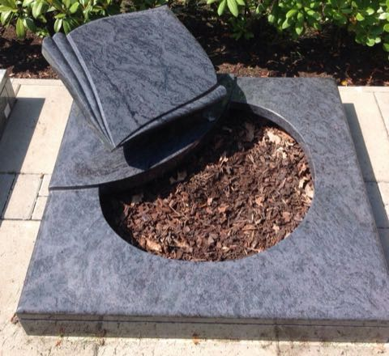

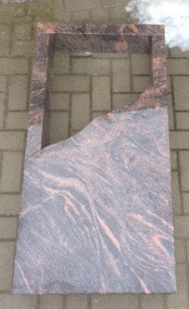

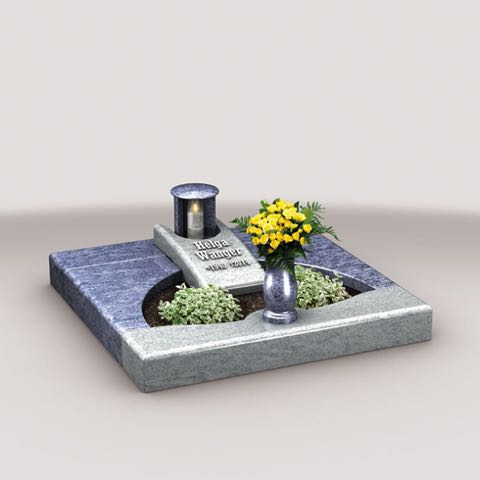

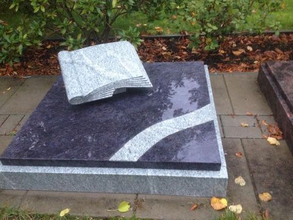

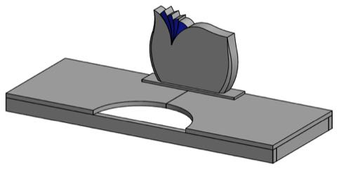

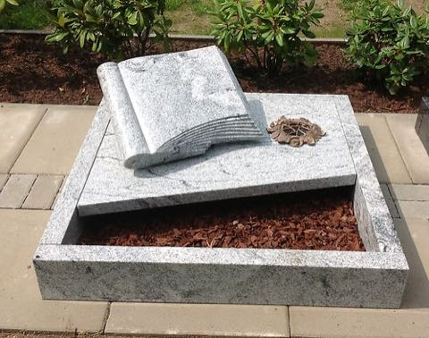

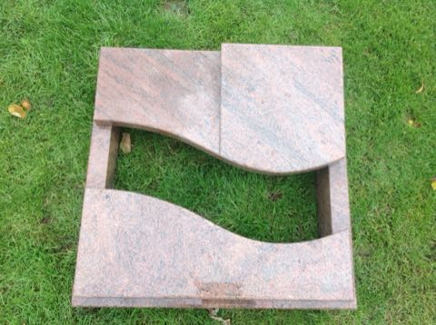

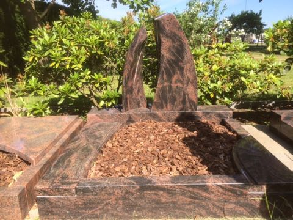

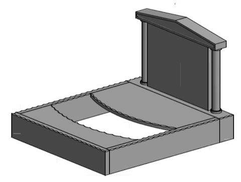

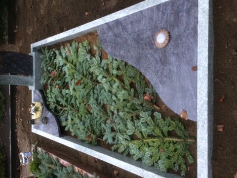

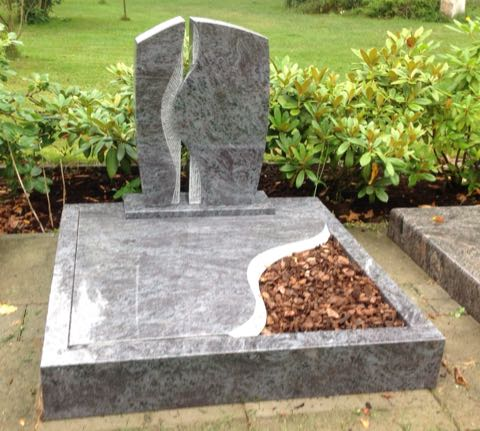

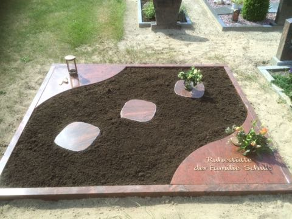

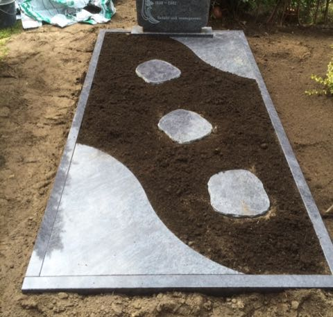

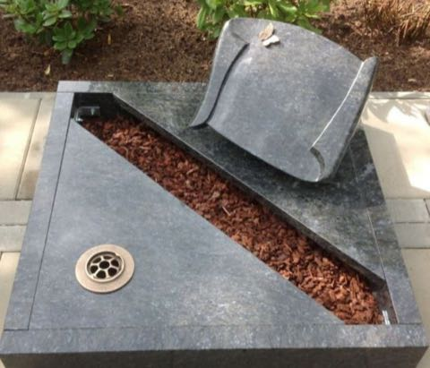

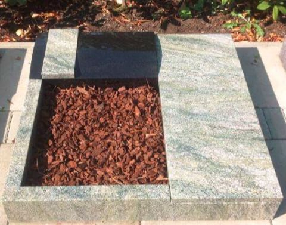
Lassen Sie sich persönlich beraten
Vereinbaren Sie einen Termin in unserer Ausstellung – auch abends und samstags.